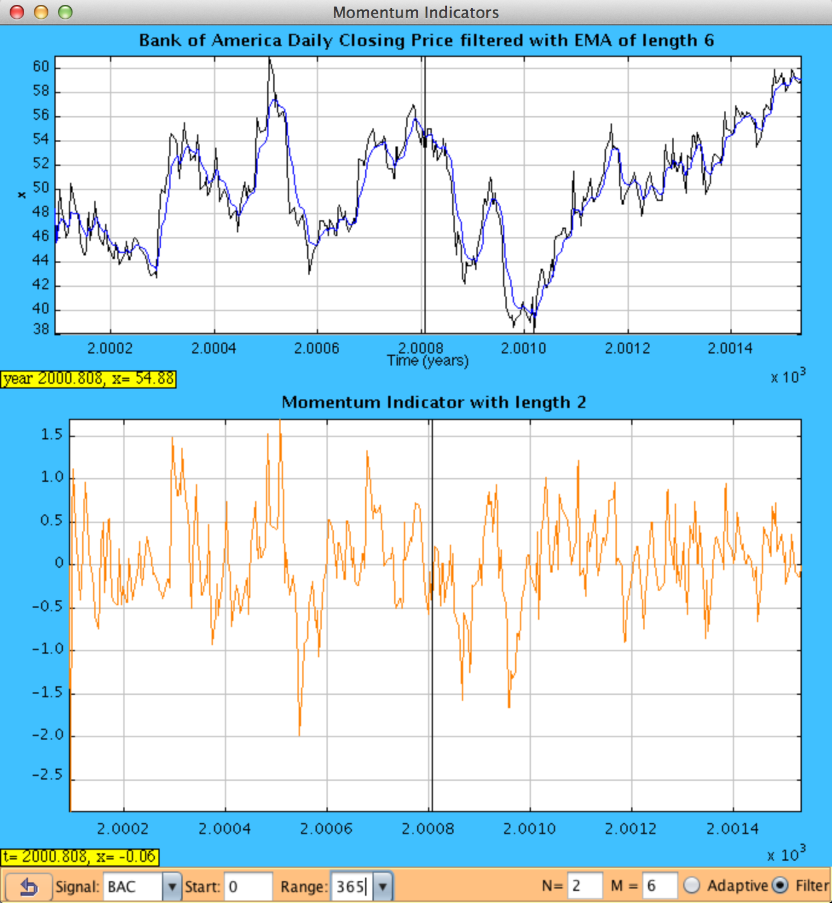

One application of Econophysics is the use of high pass filters to analyze market data. In digital signal processing, high pass filters are functions that receive high frequency components of an input signal and leave behind low frequencies. Causal refers to the fact that in practice, only past and present signal data is available for the calculation of velocity and acceleration. Examples of two type of high pass filters are the first and second derivatives as in Calculus [Mak 97]. These tools are particularly interesting for short-term signal analysis.
Traders are interested in how fast the market is moving. One way to do this is by modeling the market signal as a series of sin waves, and calculating the instantaneous frequency. You can study this method using the Instantaneous Frequency Stock Model on the OSP webpage. Another popular method is known as momentum.
In trading jargon, the term "momentum" relates more to the physical definition of velocity rather than the physical definition of momentum, which would insinuate the momentum is a function of the volume of the stock as well. Rather, it can be considered a causal high pass filter of degree 1. The output response of a momentum indicator is give by:
y(n) = x(n) - x(n - (N-1))such that N is an integer greater than 1.
Where x(n) is the closing price or the filtered closing price at time n.
Below is a screenshot of the accompanying model. The upper plot shows the input signal and a smoothed input trail in blue if the filter is turned on. The lower panel is the momentum indicator. Drag the cursor left and right to compare the graphs more easily. Below, the cursor is dropped at a point where the momentum shifts from negative to positive values, which happens to be the beginning of a bull market for Bank of America. A trader would want to buy at these opportunities and sell when the momentum becomes negative. There are boxes to the bottom left of each plot that display the position of the cursor in the time domain, where t is measured in years and in each year there are approximately 253 business days. The value of the signal at that time x is also shown.

The bottom left corner has a box to choose an input signal from a few well known stock companies. There is also a reset button to restart the model from with its initial settings. The field labeled "Start:" will accept an integer in the range [0,2000), and it represents how many days since the earliest day available to start the window of analysis. The drop-down box labeled "Range:" allows the user to select the width (in days) of the window of analysis.
In the bottom right corner there is a field labeled "N" for the user to input the integer N from the equation for the momentum output response above. Meddle with this parameter to analyze different "lengths" of momentum indicators. There is a checkbox select whether or not to calculate the momentum indicators on a filtered input function. If the option is not selected, the original set of data is used as input to the indicator function. The model implements a low-pass filter known as an exponential moving average (EMA). The equation for the output response for an EMA is given by:
y(n) = αx(n) + (1-α) y(n-1)
Where α = 2/(M+1), where M is a positive integer and often referred to as the length of the EMA. If the user enables the "Adaptive" option, the field for M will vanish and a built in function of circular frequency is used to determine α.
Chapter 8 in Mak's Mathematical Techniques in Financial Market Trading describes types of causal high pass filters. Section 8.2 addresses the Momentum indicator specifically Chapter 3 discusses low pass filters and the exponential moving average.
The Market Momentum model was created by Matt Mohorn using the Easy Java Simulations (EJS) modeling tool. You can examine and modify the physical model for this simulation if you have Ejs installed by right-clicking within the plot and selecting "Open Ejs Model" from the pop-up menu. Information about Ejs is available at: <http://www.um.es/fem/Ejs/> and in the OSP comPADRE collection <http://www.compadre.org/OSP/>.